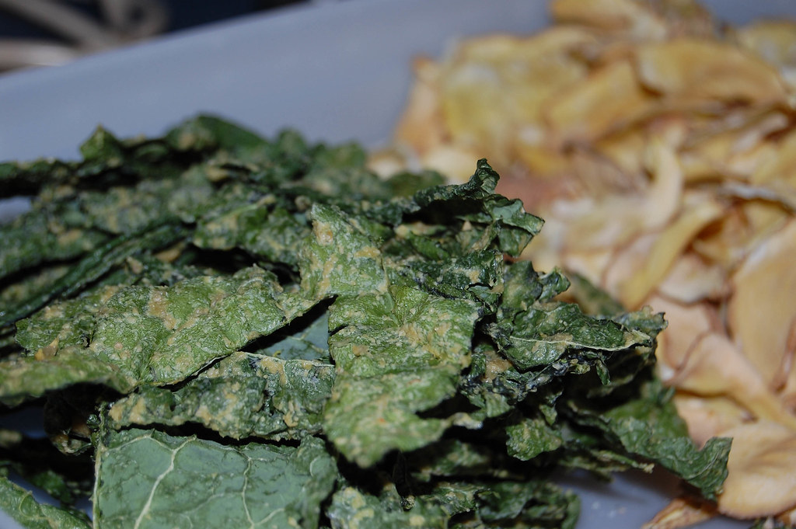

Kale Chips

Description
Imagine being able to munch as many crunchy snacks as you want while you're binging that show you love and feeling
great about it! That's the beauty of these homemade baked kale chips. Made by quickly tossing together three simple
ingredients — fresh kale, olive oil, and flaked sea salt — and baked low and slow for only 20 minutes, these crispy
kale chips are easy to make, there are no mystery additives, and even fussy eaters snap them up.
- 1 Bunch Kale
- 1 Tablespoon Olive Oil
- 1 Teaspoon Flaked Sea Balt
- Gather all ingredients.
- Preheat the oven to 300 degrees F (150 degrees C). Line a rimmed baking sheet with parchment paper
- Remove kale leaves carefully from thick stems using a knife or kitchen shears; tear into bite-sized pieces
- Wash and thoroughly dry kale with a salad spinner
- Drizzle kale leaves with olive oil; toss to coat. Spread leaves in an even layer on the prepared baking sheet without overlapping; sprinkle with salt
- Bake in the preheated oven until edges start to brown but are not burnt, 20 to 30 minutes
- Enjoy!